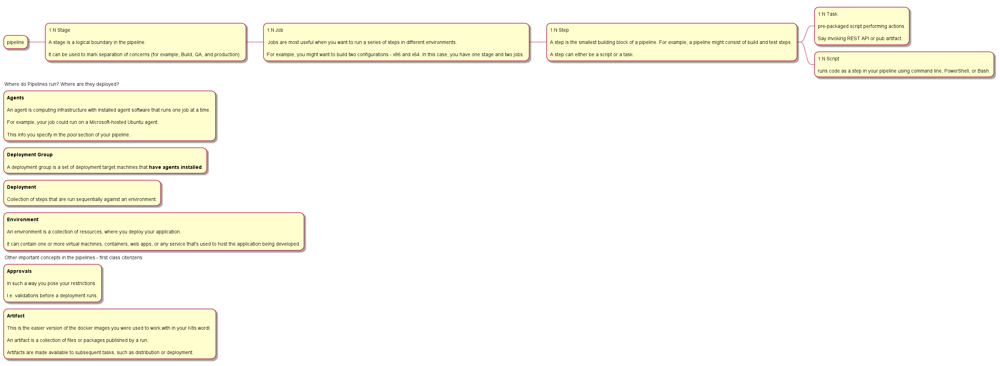

Azure Pipelines
So write here a bit of documentation about how to create your DevOps pipelines.
That will be important as in such a way you can finally abstract from the lower level stuff.
You just deployed your first webapps on Azure. You did that through a single gradle command through the gradle plug in.
So in this sense it is easy now to deploy your changes via such pipelines. You can embedd this over there as a task theoretically.
Other people are taking the lead in this dimension and know much better how to set up proper env integrated with Jira or similar boards, so will not spend too much time with it.
This is not interesting to this stage for me. It is just a small test in order to read pipelines and understand properly what is going on over there such that you can understand the general workflow.
Note that obviously all of the notes under this page stems directly from the official Microsoft documentation.
General Concepts
So understand the following basic concepts - see here.
Check as well here in order to get a proper overview of the thing:

So understand that it is essentially a hierarchy.
All of the keywords you read into a pipeline refer to these first-class citizens of the webapp.
CI/CD
So all good.
Now with the above concepts you can easily set up your pipeline.
CI -> here you put all of the different constraints that ultimately lead you to the artifact creation if successful.
You can then assemble the artifact and publish it.
CD -> deploy artifact if CI successful upon - each git pull into master etc.
Tasks
So the above is pretty it. Quite ok. You should be able to read pipelines to this stage.
It is just a question of deciding what you want to do in there and properly setting up a workflow but the operations are clear. Especially in our not so big environment.
Now understand this last bit and you will have more less a complete understanding of what is going on in the pipelines.
You can pass your user defined tasks or use already packaged tasks that Azure make available to you.
Passing user defined tasks
Note that this functions a bit like the image marketplace on K8s.
You have a container registry there where you publish your images etc. Here is the same there is a VS-Marketplace where you publish your tasks.
Ok - so weird stuff over there. Have a look ath here.
Did not loose too much time checking at it. Just by having a very quick look at it I understood it must not be that trivial.
Plus it starts to talk about node etc. Well not my beer. I guess I will live with the packaged tasks as long as possible. Should be enough.
Plus not in my focus point that bit of our tech stack.
Using packaged tasks
In order to make your life easy Azure arrived a further level of abstraction providing you the possibility to leverage on already packaged tasks.
You follow then a bit of DSL and you are done.
Note that the @<Nbr.> are the versions of such packaged tasks.
You can find the packaged tasks available here.
You see that what we used in the pipeline you have for your projects is mainly these.
Using templates
I am developing now the general setup for the Python stack. The essential idea is to create everything as code and have a complete build and release strategy for it. It goes more less along these lines.
You can read about parameter and how to consume them in the following two resources: one, two.
Check as well the existing project. There is a pipeline as well published there for the python projects. Note that there you do not publish artifacts. You rather archive things. So you can use it as reference but the solution is sub-optimal.
Note that there you have the service connection parameter.
Python
Check at this reference. Quite general and good.